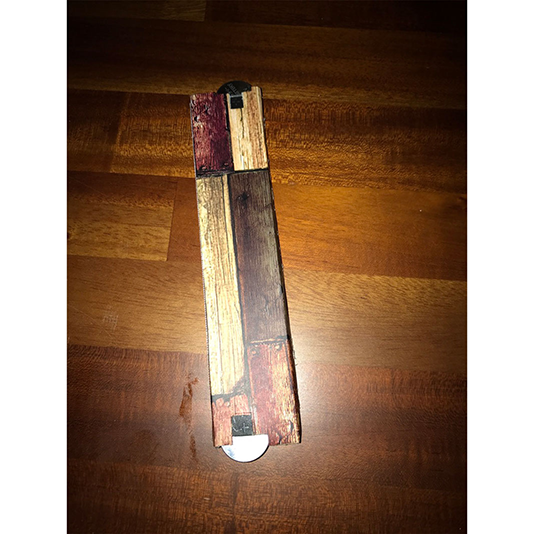
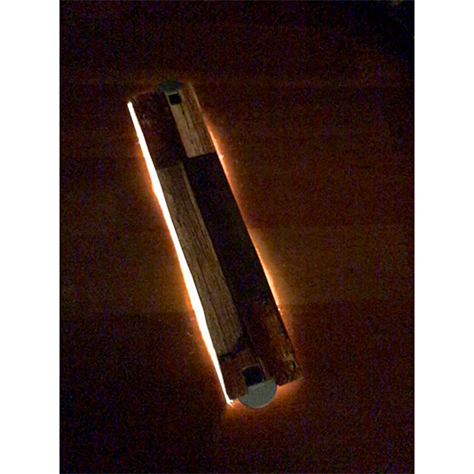

光る定規
15cmの定規で側面が光ります。
電源スイッチは電池入れの横にあります。
電池はボタン電池です。ボタン電池の種類は「CR2023」3Vです。
水濡れ厳禁です。


スライドショーに使った写真↓
光る定規 動作動画↓
コンセプト
親がこう言うのが欲しいといってきたのが始まりで、親の意見を取り入れて作りました。
親からの要望は、「15cmぐらいの定規で側面だけが光り、電源スイッチはボタン式で長さは測れなくてもいい」ということでした。
使い方
電池入れの横に電源スイッチがあるのでそのスイッチを押すと光ります。
光かたも3段階あり 消→ 明→ 暗→ 点滅→ 消 の順番です。
ターゲットユーザー
自分の親と同じように定規が光ると便利だな、そう言うのが欲しいなと思っている人。
後は、この作品を面白いと感じてくれた人。
今回思ったこと
まだ改良の余地があると思ったので趣味の方ででもいいからまた一からつくって改良してみたいと思いました。
例えば、電源スイッチを平面部分につけてみたり、定規を本当の木で作ってみたりなど...。